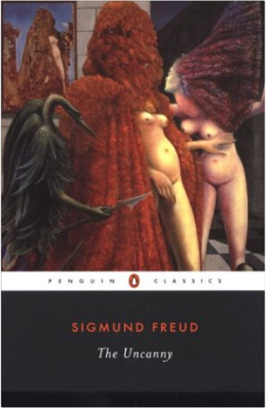
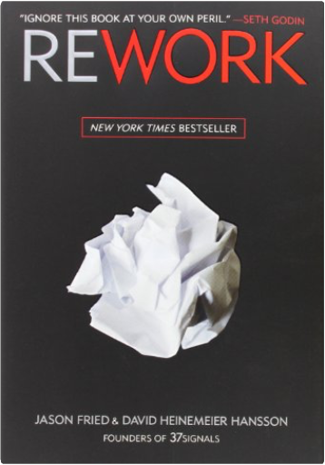
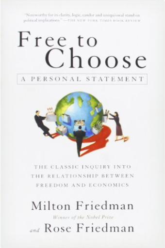
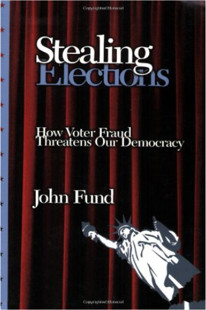

The Marriage of Bette & BooChristopher Durang The Marriage of Bette & BooChristopher Durang  Never have marriage and the family been more scathingly or hilariously savaged than in this brilliant black comedy. The marriage of Bette and Boo brings together two of the maddest families in creation in a portrait album of family life’s uncertainties and confusion. Bereaved by miscarriages, undermined by their families, separated by alcoholism, assaulted by disease, and mystified by their priest, Bette and Boo, in their bewildered attempts to provide a semblance of hearth and home, are presented with a poignant compassion that enriches and enlarges the play, and places Christopher Durang squarely in the forefront of American dramatists.  A Nation of Takers: America's Entitlement EpidemicNicholas Eberstadt A Nation of Takers: America's Entitlement EpidemicNicholas Eberstadt In A Nation of Takers: America’s Entitlement Epidemic, one of our country’s foremost demographers, Nicholas Eberstadt, details the exponential growth in entitlement spending over the past fifty years. As he notes, in 1960, entitlement payments accounted for well under a third of the federal government’s total outlays. Today, entitlement spending accounts for a full two-thirds of the federal budget. Drawing on an impressive array of data and employing a range of easy- to- read, four color charts, Eberstadt shows the unchecked spiral of spending on a range of entitlements, everything from medicare to disability payments. But Eberstadt does not just chart the astonishing growth of entitlement spending, he also details the enormous economic and cultural costs of this epidemic. He powerfully argues that while this spending certainly drains our federal coffers, it also has a very real,long-lasting, negative impact on the character of our citizens. Also included in the book is a response from one of our leading political theorists, William Galston. In his incisive response, he questions Eberstadt’s conclusions about the corrosive effect of entitlements on character and offers his own analysis of the impact of American entitlement growth.  William F. Buckley Jr.: The Maker of a MovementLee Edwards William F. Buckley Jr.: The Maker of a MovementLee Edwards “If you want to understand not only the rise of the modern conservative movement but also how conservatives can regain their footing during these perilous times, you must read William F. Buckley Jr.: The Maker of a Movement. Lee Edwards, himself a conservative icon, describes in beautiful and concise prose the brilliance that was Buckley. The book, like Buckley, is fascinating, compelling, and edifying.”  Rites of SpringModris Eksteins Rites of SpringModris Eksteins In a remarkable display of originality and discerning historical analysis Rites Of Spring describes the origins, the impact, and the aftermath of the Great War of 1914-1918, arguably the most traumatic event of this century.  EnchiridionEpictetus EnchiridionEpictetus Although he was born into slavery and endured a permanent physical disability, Epictetus (ca. 50–ca. 130 AD) maintained that all people are free to control their lives and to live in harmony with nature. We will always be happy, he argued, if we learn to desire that things should be exactly as they are. After attaining his freedom, Epictetus spent his entire career teaching philosophy and advising a daily regimen of self-examination. His pupil Arrianus later collected and published the master's lecture notes; the Enchiridion, or Manual, is a distillation of Epictetus' teachings and an instructional manual for a tranquil life. Full of practical advice, this work offers guidelines for those seeking contentment as well as for those who have already made some progress in that direction. Translated by George Long.  In Search of Dracula: The History of Dracula and VampiresRadu Florescu, Raymond T. McNally In Search of Dracula: The History of Dracula and VampiresRadu Florescu, Raymond T. McNally The true story behind the legend of Dracula - a biography of Prince Vlad of Transylvania, better known as Vlad the Impaler. This revised edition now includes entries from Bram Stoker's recently discovered diaries, the amazing tale of Nicolae Ceausescu's attempt to make Vlad a national hero, and an examination of recent adaptations in fiction, stage and screen.  The Gods Will Have BloodAnatole France The Gods Will Have BloodAnatole France It is April 1793 and the final power struggle of the French Revolution is taking hold: the aristocrats are dead and the poor are fighting for bread in the streets. In a Paris swept by fear and hunger lives Gamelin, a revolutionary young artist appointed magistrate, and given the power of life and death over the citizens of France. But his intense idealism and unbridled single-mindedness drive him inexorably towards catastrophe. Published in 1912, The Gods Will Have Blood is a breathtaking story of the dangers of fanaticism, while its depiction of the violence and devastation of the Reign of Terror is strangely prophetic of the sweeping political changes in Russia and across Europe.  Ike and Dick: Portrait of a Strange Political MarriageJeffrey Frank Ike and Dick: Portrait of a Strange Political MarriageJeffrey Frank Dwight D. Eisenhower and Richard Nixon had a political and private relationship that lasted nearly twenty years, a tie that survived hurtful slights, tense misunderstandings, and the distance between them in age and temperament. Yet the two men brought out the best and worst in each other, and their association had important consequences for their respective presidencies.  The UncannySigmund FreudFreud was fascinated by the mysteries of creativity and the imagination. The groundbreaking works that comprise The Uncanny present some of his most influential explorations of the mind. In these pieces Freud investigates the vivid but seemingly trivial childhood memories that often "screen" deeply uncomfortable desires; the links between literature and daydreaming; and our intensely mixed feelings about things we experience as "uncanny." Also included is Freud's celebrated study of Leonardo Da Vinci-his first exercise in psychobiography.  ReworkJason Fried, David Heinemeier HanssonMost business books give you the same old advice: Write a business plan, study the competition, seek investors, yadda yadda. If you're looking for a book like that, put this one back on the shelf.  Free to Choose: A Personal StatementMilton Friedman, Rose FriedmanThe international bestseller on the extent to which personal freedom has been eroded by government regulations and agencies while personal prosperity has been undermined by government spending and economic controls. New Foreword by the Authors; Index.  Stealing Elections: How Voter Fraud Threatens Our DemocracyJohn FundThis book gives us a chilling portrait of our electoral vulnerability. Written with urgency and authority. |
 Made with Delicious Library
Made with Delicious LibrarySpringfield, State zipflap congrotus delicious library Pedrie, John